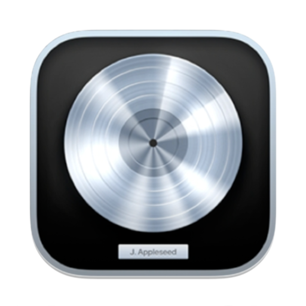
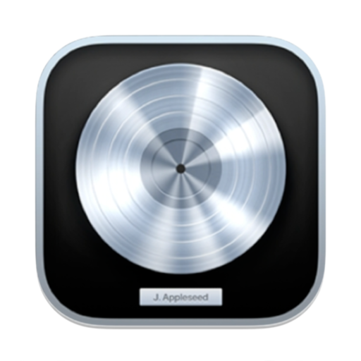

Esteban Stieb
Biografía
Soy un productor musical con más de 20 años de experiencia. He colaborado con grandes nombres de la industria y trabajado en una amplia variedad de géneros. Mi enfoque en la calidad y la innovación me ha llevado a destacarme en el campo. Siempre estoy listo para nuevos desafíos y emocionado por lo que el futuro musical me depara.
Programas
 

Trabajos
Producción de Álbum para Artista Indie, Composición de Música para Comercial, Remix para Artista Reconocido, Producción de Pista para Película Independiente
Contacto
Juan Pebay
Biografía
Soy un apasionado productor musical que ha dominado el arte de la creación sonora a través de FL Studio. Con años de experiencia en la industria, he producido una amplia gama de géneros, desde hip-hop hasta electrónica. Mi habilidad para aprovechar al máximo las capacidades de FL Studio me ha permitido llevar mis ideas musicales a nuevas alturas, creando pistas innovadoras y emocionantes que resuenan con la audiencia. Con cada proyecto, busco superar los límites y dejar una marca duradera en el mundo de la música.
Programas
Trabajos
Mezcla para Sencillo de Pop, Masterización para DJ de Renombre, Edición de Audio para Podcast Popular, Grabación de Voces para Anuncio de Televisión.
Contacto
Agustín Morales
Biografía
Soy un productor musical apasionado con una habilidad innata para la creación de sonidos cautivadores. A lo largo de mi carrera, he explorado una amplia variedad de géneros musicales, desde el indie hasta el EDM. Mi enfoque en la innovación y la creatividad me ha llevado a producir pistas que resuenan con la audiencia en todo el mundo. Con cada proyecto, busco llevar la música a nuevos horizontes y emocionar a los oyentes con experiencias auditivas únicas e inolvidables.
Programas
Trabajos
Producción de Álbum para Artista Emergente.
Contacto
Julio Marquez
Biografía
Soy un productor musical con una pasión inquebrantable por la creación de sonidos únicos y memorables. Mi viaje en la industria musical comenzó como un sueño que se convirtió en una realidad, y desde entonces he estado trabajando incansablemente para perfeccionar mi oficio y dejar mi marca en el mundo del arte sonoro.
Programas
Trabajos
Composición de Música para Comercial, Remix para Artista Reconocido.